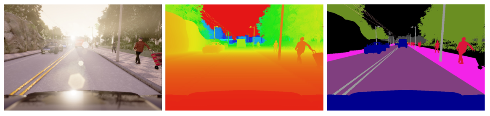

How to use ROS_BRIDGE
Abstract
- ROS Bridge Driver Package for CARLA Simulator Package
- Code based on another package used for ROS-CARLA integration used by the CARLA repository
- The goal of this ROS package is to provide a simple ROS bridge for CARLA simulator in order to be used for the ATLASCAR project of Aveiro University.
- This documentation is for CARLA versions newer than 0.9.4
Image Results:

Features
- Cameras(Depth, Segmentation, RGB) Support.
- Transform Publications.
- Manual Control Using Ackermann ROS Message.
- Handle ROS Dependencies.
- Marker/Bounding Box Messages For Cars/Pedestrians.
- LIDAR Sensor Support.
- ROSBAG In The Bridge(in order to avoid rosbag record -a small time errors).
- Add Traffic Light Support.
- ROS/OpenCV Image Convertion and Object Tracking using Template Matching.
Simulation Platform
This simulation platform supports flexible specification of sensor suites and enviornmental conditions used in order to study the performance of three approaches to autonomous driving: a classic modular pipeline model, an end-to-end model trained via imitation learning and an end-to-end model trained via reinforcement learning. The first approach consists in a classic modular pipeline that comprises a vision-based perception module, a rule-based planner and a maneuver controller. The second approach consists in a deep network that maps sensory input to driving commands, trained end-to-end via imitation learning. Finally, the third approach also consists in a deep network but this one was trained end-to-end via reinforcement learning. These approaches were evaluated in various controlled scenarios of increasing difficulty, and their perfomance was examined via metrics provided by CARLA, illustrating the platform's utility for autonomous driving research.
Simulation Engine
The simulation engine used by CARLA has been build for flexibility and realism in the rendering and physics simulation and it serves as an open-source layer over the Unreal Engine 4(UE4), enabling future extensions by the community. This engine provides state-of-the-art rendering quality, realistic physics, basic NPC logic components and an ecosystems of interoperable plugins. Also, the engine itseft is free and non-commercial for use.
The CARLA simulates an open dynamic world and provides a simple interface between the world and the controlling agent which is the one who interacts with the world. To support this functionality, CARLA was designed based on a server-client model, where the server runs the simulation, renders the scene and provides data information to the client. The client API was implemented in Python and it's responsible for the establishing connection and future interaction betweem the autonomous agent and the server via sockets. This client sends commands, or meta-commands, to the server and receives sensor messages in return. The commands used to control the vehicle include steering accelerating and braking. Meta-properties used to control the environment include modifying the sensor suite and the environmental properties used to control the environment include weather conditions, illumination and the density of cars and pedestrians.
When the server is reset, the agent is re-initialized at a new location specified by the client API.
The environment used by CARLA is composed of 3D models of static objects such as buildings, vegetation, traffic signs, infrastructure, as well as dynamic objects such as vehicles and pedestrians. All models were carefully designed to reconcile visual quality and rendering speed, using low-weight geometric models and textures, maintain visual realism by carefully crafting the materials and making use of a variable level of detail. All 3D models were made in a common scale, and their sizes reflected those of real objects. At the time of writting of this paper, the asset library includes 40 different buildings, 16 animated vehicle models and 50 animated pedestrian models.
The sensors used by CARLA allow for flexible configuration of the agent's sensor suite. At the time of writting of this paper, the sensors were limited to RGB cameras and pseudo-sensors that provide ground-truth depth and semantic segmentation. These sensors can be illustrated down below

The number of cameras used, their type and their position are parameters that can be specified by the client. The camera parameters include 3D location, 3D orientation with respect to the car's coordinate system, its filed of view and its depth of field.
The CARLA's semantic segmentation pseudo-sensor provides 12 semantic classes: roasd, lane-marking, traffic sign, sidewalk, fence, pole, wall, building, vegetation, vehicle, pedestrian and other.
In addition to sensor and pseudo-sensor readings, the CARLA also provides a range of measurements associated with the state of the agent and compliance with traffic rules. The measurements used to translate the agent's state include vehicle location and orientation with respect to the world coordinate system(GPS/compass), speed, acceleration and accumulated impact from collisions. The measurements used to translate traffic rules include the vehicle's footprint percentage that impinges on the wrong-way lanes or the sidewalks, as well as the states of the traffic lights and the speed limit at the current location of the vehicle.
Finally, the CARLA also provides access to the exact locations and bounding boxes of all the dynamic objects present in the environment. These signals play an important role in training and evaluating driving processes.